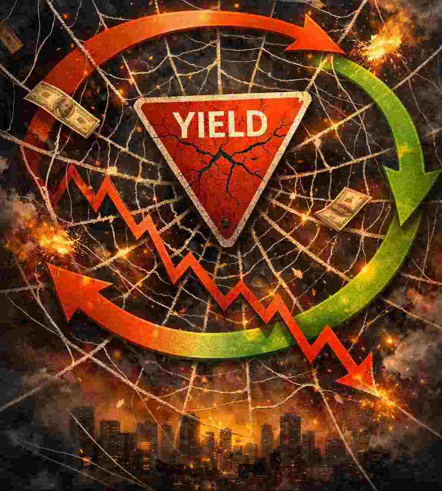

夺命蜘蛛网
信心崩溃如何把债券殖利率变成失控的正回馈回路

经济学中有一个有用的蛛网模型（cobweb model），用来分析经济周期与泡沫。在正常情况时（负回馈蛛网模型），高价格会鼓励生产者增加供应，最终把价格拉下来。系统会出现震荡，但会逐渐稳定下来。在正回馈版本中，更高的价格预期本身就会把实际价格推得更高。蜘蛛网会越收越紧，直到崩断。
债券市场能以惊人的速度从第一种版本转成第二种。当投资人仍相信中央银行最终会压制通膨时，较高的名义殖利率会发挥煞车作用。一旦这份信任蒸发，同样的高殖利率就会变成加速器。投资人因为怀疑央行是否有意愿与能力扑灭通膨，会要求越来越高的通膨风险溢价。这些更高的殖利率被解读为系统已经崩溃的证据，进一步推高通膨预期，令回路自我强化。
蛛网数学模型很简单。预期通膨可以写成一个自回归过程：
\[\pi_(t+1) = \pi_t + k(\pi_t – \pi_(t-1))\] 其中 \(\pi_t\) 是第 t 期的预期通膨；k 是回馈系数，衡量投资人把从 t-1 到 t 的通膨预期上升外推到未来预期的强度。
重新整理成标准二阶线性齐次差分方程：
\[\pi_(t+1) – (1 + k) \pi_t + \pi_(t-1)) = 0\] 特征方程变成：\(\lambda^2 - (1 + k)\lambda + k = 0\)。因式分解后得到根：\(\lambda_1 = 1\)，\(\lambda_2 = k\)。因此预期通膨随时间的一般解为 \(\pi_t = C_1(1)^t + C_2 k^t\)。 若要让名义利率出现爆炸性、连锁式螺旋上升，第二个特征根必须位于单位圆之外（\(|\lambda_2| = k > 1\)）。在这种情况下，制度性信心被摧毁，未来利率会以指数速度被推高。
市场上即将失去信心的版本，目前正全面展现在殖利率曲线上。美国长期公债殖利率已攀升至超过二十年未见的水准：十年期曾上涨至 5.2% 以上，三十年期则超过 5.6%。像 TLT 这类长期债券基金已被重创，且几乎看不到稳固底部的迹象。日本，英国与部分欧陆国家利率也出现类似的数十年高点。
美国正面临特别尴尬的再融资状况。大约三分之一的美国公债会在十二个月内到期，必须以市场当下所要求的较高利率展期。外国官方买盘不再是可靠的承销者。中国持有的美国公债已降至约 6,180 亿美元 - 这是 2008 年以来最低水准，低于十多年前超过 1.3 兆美元高峰的一半。日本机构长期是稳定需求来源，但在本地殖利率上升的压力下，正逐渐倾向购买日本国债（JGB）。
与此同时，私人部门也在发债。资本密集的人工智能与科技公司持续大量发行债券与股权连结证券，为数据中心与晶片采购融资，直接与美国公债竞争资金。
这就是经典的债务陷阱（debt-trap)失控。更高的殖利率推高政府利息支出，扩大赤字，需要发更多债，进而再推高殖利率。股市早已超买，且高度杠杆，对贴现率的持续上升的抵抗力很脆弱。股市急挫会反过来伤害资本利得税与企业所得税收入，进一步令政府财政恶化。
联储局能否像伏尔克那样，把短期利率推高到足以压低通膨预期的水平？ 1980 年整个联邦债务还不到 1 兆美元。今天已超过 40 兆。即使在非衰退年份，年度赤字仍接近 2 兆。福利计划与利息成本几乎不留任何裁减空间。真正的伏尔克式利息上升会立即造成政治上无法承受的后果，这一点投资者十分明白，亦是为什么他们对联准会是否有意愿与能力扑灭通膨失去信心的原因。
殖利率高企并非只是政府的问题。企业债、家庭房贷、信用卡余额、学生贷款，以及庞大的私人信贷体系，全都是在「借钱会一直便宜」的假设下扩张的。利率每上升 1 个百分点，就会让所有需要再融资的债务利息成本倍增。在 2% 时看起来可行的投资，到了 5% 或 6% 就变得岌岌可危。低息造成的错误投资迟早会爆破。
靠杠杆养肥的金融机构终将需要救援。历史显示，中央银行会提供支援 - 互换额度、紧急机制或直接扩张资产负债表等等，因为置之不理的话就会造成系统性崩盘。一旦救援过程启动，政策优先顺序就会从控制通膨转向保全债券市场与银行体系稳定。
债券对那些把它们当作无风险的投资者来说，过去十年的回报已经十分悲惨。当传统避险资产本身变成波动来源时，投资者会选择政府无法凭空印出来的货币资产：黄金。
在平常时期，黄金不喜欢利率上胀，因为持有无利息收益金属的机会成本会上升。但一旦投资者关切「资本能否拿得回来」时，一切就改变了。当投资人开始怀疑债券最终偿还所用货币的长期购买力时，黄金就不再像对利率敏感的商品，而开始变成货币保险工具。
1970 年代提供了最清晰的现代例证。 1971 年美元与黄金的连结被切断后，金价从大约每盎司 35–40 美元攀升至 1980 年 1 月接近 850 美元的高峰 - 涨幅超过二十倍。同一时期，十年期公债殖利率从 1970 年代初期的约 6% 升至 1981 年十月的 15.84%。在那十年的大部分时间，尤其是后半段，殖利率与金价同步上升。当时通胀预期正失控，更高的名义利率不再是吓阻因素，相反，它们只是货币体系陷入严重麻烦的证据。黄金在那个环境中蓬勃发展。
正回馈蛛网模型描述的是当前一个体制的稳定假设停止运作时会发生什么事。信心是脆弱的东西。一旦开始瓦解，利率螺旋就可能自我强化。到了那个时候，印钞就是唯一可选项。而黄金，一如既往地耐心地，静静地等待市场先生按下重置键。
这篇文章也已发布在我的Substack网站上。
免责声明
本部落格所提供之内容仅供资讯与教育用途，并不构成任何财务、投资或专业建议。本人并非持牌财务顾问；文中所表达之观点仅属个人基于逻辑思考与一般观察所得的意见。金融市场本质上具有高度波动性与不可预测性，过往表现并不代表未来结果。
强烈建议读者在作出任何投资或财务决策前，应自行进行独立研究、充分的调查分析，并咨询合格的专业人士。透过存取及使用本部落格的资料，您即承认并同意作者对于因依赖此处所载资讯而可能导致的任何损失、损害或不利结果，概不承担任何责任或义务。